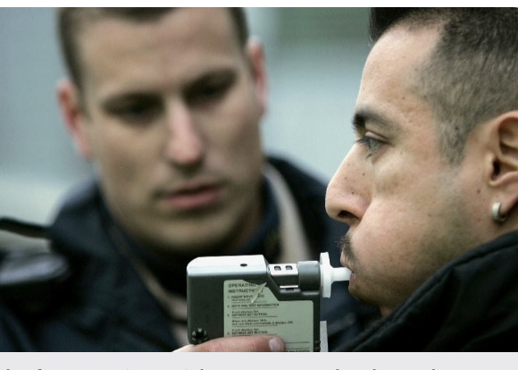

Home
About Us
.05 BAC Facts
Proof and Tools
Coalition Members
Join Now
News
Map
News
February 11, 2022
NHTSA Evaluation of Utah’s .05 BAC Per Se Law (Traffic Tech)
February 11, 2022
NHTSA Evaluation of Utah’s .05 BAC Per Se Law (Full Report)
June 19, 2021
NY Letter: Lower BAC limit would reduce drunk driving fatalities
June 15, 2021
New York Viewpoint: A lower legal blood-alcohol limit will save lives
May 19, 2021
Proposed NY law would lower state blood alcohol limit to .05
April 28, 2021
The 0.05% BAC Law and Vision Zero
December 29, 2020
Utah's Law Turns 2, Tourism Increased
March 16, 2020
Risk of a fatal crash increases with increasing BACs
March 14, 2020
Support for Hawaii's .05 Law
September 29, 2019
NTSB Chairman Supports 0.05 BAC Limit
July 26, 2019
Utah Governor and CDC Urge Other States to Adopt 0.05
April 22, 2019
Support for Liam’s Law in California
January 17, 2019
Utah’s Highway Deaths Drop
January 8, 2019
The Facts about .05 BAC Laws to Counter Misinformation

December 19, 2018
Utah passes Nation’s First 0.05 Law
Mar 22, 2017
My view: Utah roads will be safer with .05 percent BAC law
February 18, 2017
Op-ed: Separate drinking from driving by lowering legal limit